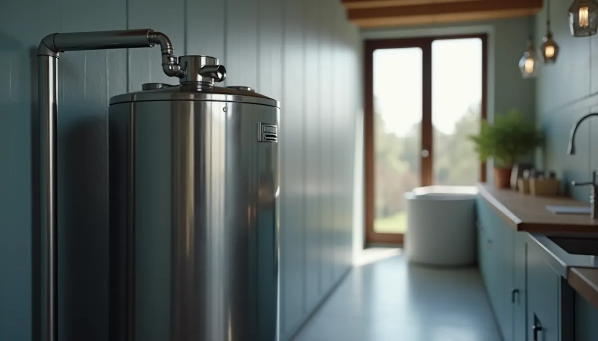
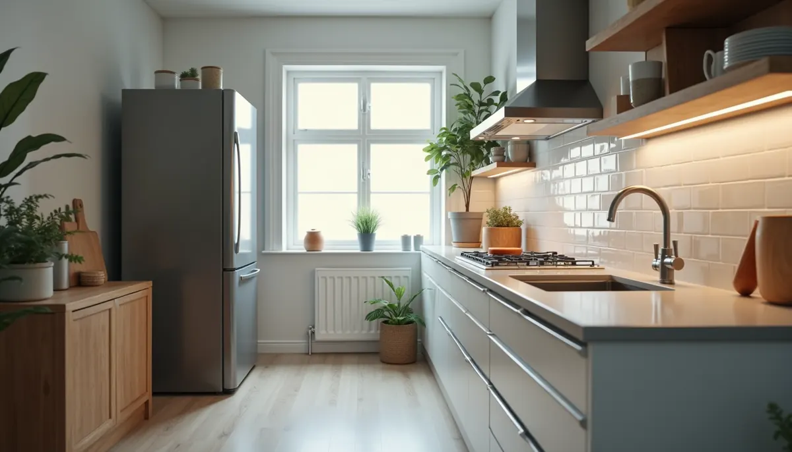
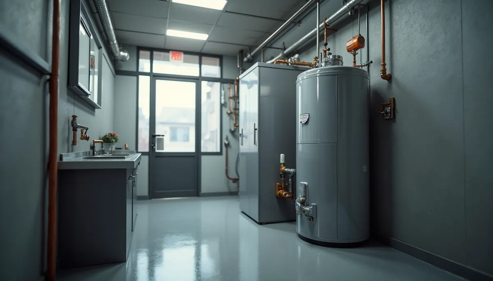

When it comes to keeping your home comfortable, few appliances play as vital a role as the water heater. It quietly ensures that we have hot water for showers, cooking, and cleaning. However, one important detail many homeowners overlook when selecting a new unit is the material used in the heating elements and internal components. While copper has long been the standard choice, stainless steel is proving to be the better option, offering significant advantages for homeowners in the long run.
The Great Debate: Stainless Steel vs. Copper in Water Heaters
Copper has traditionally been the preferred material for water heater elements because of its excellent thermal conductivity. It heats water quickly, which is essential for meeting immediate hot water needs.
However, copper has a serious drawback: its vulnerability to corrosion and mineral buildup, especially in regions with hard water, such as Murfreesboro, Tennessee. Hard water contains high levels of minerals like calcium and magnesium. When these minerals interact with copper, several issues arise:
Corrosion: Over time, copper degrades due to corrosion, which can lead to thinning, cracks, and ultimately leaks. This not only shortens the lifespan of the element but can also cause unexpected failures of the entire water heater.
Mineral Buildup (Scaling): Hard water causes minerals to form scale on the surface of copper heating elements. This scale acts like an insulator, making it harder for the element to heat water. As a result, homeowners can see their energy bills rise by as much as 15% to 30% as the heating elements become less effective.
The Stainless Steel Advantage
Stainless steel stands out due to its impressive resistance to both corrosion and mineral buildup. Unlike copper, stainless steel forms a protective oxide layer that shields it from harsh elements found in hard water.
The benefits of stainless steel include:
- Reduced Scaling: With less mineral accumulation, your water heater can perform efficiently for longer periods, ensuring a reliable supply of hot water without the frustration of scaling issues.
- Durability: Stainless steel can handle higher temperatures and pressure levels than copper, reducing the risk of cracking and leaks, which are common with copper components.
A well-maintained stainless steel water heater can last up to 15 or even 20 years, while copper units often need replacement every 5 to 10 years.

Choosing a stainless steel water heater might involve higher initial costs, but the long-term savings on maintenance, repairs, and energy bills can be substantial. For example, less frequent replacements can mean lower waste and reduced environmental impact.
Energy Efficiency: Going Green with Stainless Steel
Energy efficiency is crucial when selecting a water heater. These appliances account for a significant portion of household energy consumption.
Using a stainless steel water heater helps maintain operational efficiency throughout its lifespan. Reduced mineral buildup means heating elements operate effectively, which can help lower overall energy usage. Studies show that homeowners can save between 10% and 20% on energy costs by switching to a more efficient water heater.

Additional Benefits of Stainless Steel Water Heaters
In addition to durability and efficiency, there are other compelling advantages to stainless steel water heaters. For instance, they are often easier to install, fitting seamlessly into existing plumbing systems.
Their modern design not only appeals to the eye but also ensures that they blend well with contemporary home décors. Furthermore, stainless steel is less likely to leach into your water supply when compared to copper, providing peace of mind regarding water safety for you and your family.
Final Thoughts
In summary, when choosing a water heater, the material used in the heating elements and components plays a crucial role in performance and longevity.
While copper has been favored for its quick heating capabilities, stainless steel is emerging as the more reliable and efficient option for today's water heating needs. Its resistance to corrosion, minimal scaling, and longer lifespan make stainless steel water heaters a smart investment that saves homeowners both money and hassle.
As you consider your options for home comfort, remember the benefits of stainless-steel water heaters. They offer not just reliability and energy efficiency, but also a sustainable solution to your hot water needs. Ready to learn more, contact your Middle TN Plumbing Experts at Angle Stop Plumbing (615) 398-3048.
